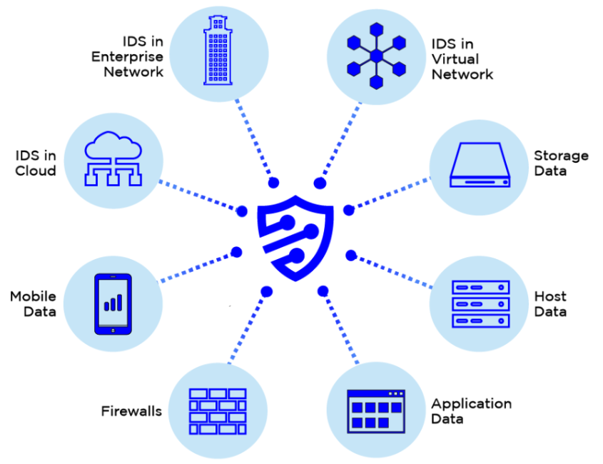

¿Qué es la ciberseguridad de la nube?
La seguridad en la nube es una rama de la ciberseguridad que se refiere a las medidas que se adoptan para proteger la infraestructura basada en la nube, tanto las aplicaciones como los datos. Así se garantiza la protección de la información contra alguno de los ataques cibernéticos o errores.
En los últimos años las empresas y organizaciones de todos los tamaños han confiado en la computación o servicios en la nube como una forma de agilizar sus operaciones, y por buenas razones. Atrás quedaron los días e inconvenientes cuando eran necesarios software y hardware físicos para acceder a la información, además del dolor de cabeza que representaba la gestión y mantenimiento de los mismos.
Ahora, gracias a servidores remotos y a una conexión a internet, los recursos virtuales están disponibles para los usuarios. Si bien la computación en nube rompe paradigmas al facilitar la colaboración, accesibilidad y nuevas oportunidades a las empresas, también implica retos para garantizar la seguridad de la información ante amenazas internas y externas.
La seguridad en la nube es una disciplina de la ciberseguridad que se dedica a proteger los sistemas informáticos en la nube.
La seguridad en la nube es importante porque los datos almacenados en la nube pueden ser vulnerables a ataques cibernéticos y robos de datos.
Los proveedores de servicios en la nube utilizan métodos de seguridad para mantener los datos de los clientes privados y almacenados de forma segura. Es de seguridad para mantener los datos de los clientes privados y almacenados de forma segura.
Sin embargo, la seguridad en la nube también está parcialmente en manos del cliente. Comprender ambas facetas es fundamental para una solución saludable de seguridad en la nube.
¿Por qué es importante el respaldo de documentos en la nube?
La información de las empresas es uno de sus recursos más preciados y su protección es una de las prioridades en esta época. Hacer una copia de seguridad en la nube es un paso que conlleva muchas ventajas frente a usar dispositivos o redes que pueden tener altos costos y poca eficiencia y confiabilidad.
El respaldo de documentos en la nube es importante por varias razones. En primer lugar, al guardar los documentos en la nube, se reduce el riesgo de pérdida de datos ocasionados por problemas con el ordenador o daños en las unidades de almacenamiento externas.
Sus beneficios, por lo tanto, son:
- Costos menores
- Confiabilidad
- Flexibilidad
- Seguridad
- Cumplir con los requisitos de conformidad
¿Qué es una auditoría de seguridad en la nube?
Las organizaciones también desempeñan un papel importante para proteger su información. ¿Cómo lo logran? Mediante un proceso muy común: una auditoría realizada por un tercero que inspeccionará y recabará evidencia de que los controles se están implementando de forma correcta y hará pruebas para asegurarse de que se cumplan los estándares de la industria.
Una auditoría de seguridad en la nube es el proceso de evaluación de la seguridad de un entorno de computación en la nube. El objetivo de una auditoría de seguridad en la nube es identificar los riesgos de seguridad y las vulnerabilidades, y recomendar controles para mitigar esos riesgos.
Por lo general se compone de 5 pasos:
- Planeación
- Recolección de datos
- Análisis
- Recomendaciones
- Reparación
Por lo general, la frecuencia de las auditorías depende de la importancia de la información almacenada, aunque lo más común es una vez por año. Y sus beneficios son verificar que las personas correctas tienen los accesos adecuados; revisar que los usuarios se conectan a la nube utilizando los protocolos adecuados; identificar los posibles riesgos tanto de usuarios como de la plataforma y comprobar la accesibilidad, integridad y disponibilidad de la información.
Proteger la información de la nube es una calle de doble sentido. Mientras que los proveedores deben garantizar la integridad de sus plataformas, las empresas también comparten la responsabilidad de usar correctamente las aplicaciones. Una forma de lograrlo es con un certificado SSL.
5 riesgos de seguridad en la nube
Filtración de datos
Las filtraciones de datos son uno de los tipos de incidentes de ciberseguridad más comunes y costosos. Afectan a empresas de todos los tamaños, industrias y geografías, etc. y se producen con una regularidad alarmante. Según un informe del Instituto Ponemon de 2019, las probabilidades de ser víctima de una filtración de datos son de una entre cuatro en un periodo de dos años.
Malware
Es un programa malicioso,también conocido como programa maligno, programa malintencionado o código maligno, es cualquier tipo de software que realiza acciones dañinas en un sistema informático de forma intencionada.

API Insegura
Es una vulnerabilidad que ocurre cuando una aplicación o una API deserializa datos manipulados por un atacante en el lado del servidor.
Falta de gobernanza para los accesos
El pensamiento divergente corresponde a la primera parte de los diamantes. En esta fase se trabaja con asociaciones poco convencionales. Es la parte más "lúdica" y libremente creativa del proceso.
Cuentas hackeadas
Las cuentas hackeadas son aquellas que han sido comprometidas por un tercero sin el consentimiento del propietario de la cuenta. En general, los hackers buscan obtener información personal o financiera de la víctima, o utilizar la cuenta para enviar spam o realizar actividades maliciosas..
5 tipos de seguridad en la nube
Ahora que ya conoces algunas de las amenazas y riesgos más comunes a la seguridad en la nube, también debes familiarizarte con algunas de las herramientas de software que impiden que ocurran y ayudan a minimizar los daños en caso de que se presenten.
Cloud Access Security Broker (CASB)
Un agente de seguridad de acceso a la nube, abreviado como CASB, es un punto de cumplimiento de
directiva de seguridad que se posiciona entre los usuarios de la empresa y los proveedores de servicio en la nube..

Cloud Identity and Access Management (IAM)
La gestión de identidades y accesos (IAM) es la disciplina de seguridad que permite a las personas adecuadas
acceder a los recursos adecuados en el momento adecuado y por las razones adecuadas. La IAM responde a la
necesidad crítica de garantizar un acceso adecuado a los recursos en entornos tecnológicos cada vez más heterogéneos..
Security Incident and Event Management (SIEM)
En pocas palabras, la SIEM es una solución de seguridad que ayuda a las organizaciones a reconocer
posibles amenazas y vulnerabilidades de seguridad antes de que tengan la oportunidad de interrumpir operaciones
empresariales.

Cloud Security Posture Management (CSPM)
La gestión de la postura de seguridad en la nube (CSPM) es un tipo de herramienta de software automatizada
que identifica los riesgos de seguridad en la infraestructura en la nube.CSPM es como un inspector
de edificios que encuentra posibles riesgos de seguridad, pero CSPM inspecciona el software alojado en la nube,
no los edificios.
Security Access Service Edge (SASE)
Se trata de un marco identificado por los analistas de Gartner como la forma de conectar de forma segura entidades como usuarios y máquinas a aplicaciones y servicios en cualquier ubicación.
3 ejemplos de prácticas de seguridad en la nube
Ya tenemos un panorama más completo de las estrategias y procesos que implica la seguridad en la nube. Ahora sabes que tanto los proveedores como los usuarios son responsables de crear un ambiente seguro de las amenazas. Ahora te mencionaremos algunas de las mejores prácticas para fortalecer aún más estos protocolos.
- Consulta a tu proveedor de servicios en la nube
- Crea accesos seguros
- Entrena a la fuerza de trabajo
3 herramientas de seguridad en la nube
Finalmente, las herramientas de seguridad en la nube contribuyen a afinar tus esfuerzos y complementar algunos de los puntos que vimos anteriormente.
Incluye mantener los datos privados y seguros a través de la infraestructura, las aplicaciones y las plataformas en línea. Asegurar estos sistemas implica los esfuerzos de los proveedores de la nube y de los clientes que los utilizan, bien se trate de una persona, una pequeña o mediana empresa o una organización.
- La encriptación
- Manejo de vulnerabilidades
- Prevención de pérdida de datos